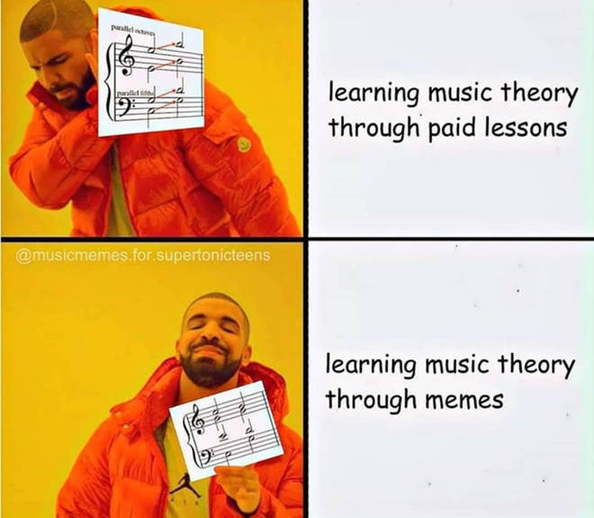

1 Introduction
1.1 Musical Memes
The term ‘meme’ has been adopted by everyday language and is usually associated with a certain image, superimposed with text, that is shared on the internet and has a particular contextual meaning.

Originally, however, the definition of ‘meme’ was much broader. Towards the end of The Selfish Gene, Richard Dawkins introduced the concept as follows:
“We need […] a noun that conveys the idea of a unit of cultural transmission, or a unit of imitation. ‘Mimeme’ comes from a suitable Greek root,1 but I want a monosyllable word that sounds a bit like ‘gene’. I hope my classicist friends will forgive me if I abbreviate mimeme to meme.” Dawkins (1976, p. 192)
Here, we adopt this original, more extensive concept of memes that, as we will discover, comprises the more or less funny internet pictures as a special case.
The field of cultural evolution emerged in the 1980’s (e.g., Boyd & Richerson, 1985; Cavalli-Sforza & Feldman, 1981), and has, in parallel with the advancement of computational facilities, gained momentum. Theories on cultural evolution share many facets with approaches on memetics (Aunger, 2001; Blackmore, 2000; Dawkins, 1976; Howe & Windram, 2011), a field that has also been applied to the case of music (Jan, 2016).
In recent years, several approaches have attempted to apply formal models from cultural evolution to the domain of music.
In the present context, we first introduce some central ideas of cultural evolution and review a few major publications for the domain of music.
A few selected important contributions are:
- “Cultural Transmission and Evolution: A Quantitative Approach” (Cavalli-Sforza & Feldman, 1981)
- “Culture and the Evolutionary Process” (Boyd & Richerson, 1985)
- “The Memetics of Music” (Jan, 2016)
- “Cultural Evolution and Music” (Youngblood et al., forthcoming)
- “Cultural Evolution of Music” (Savage, 2019)
1.2 Conditions for an evolutionary system
- variation
- selection
- retention
See Blackmore (2000), Chapter 2 “Universal Darwinism” for an excellent introduction.
These factors are, coincidentally, also central in the definition of folk music put forward by the International Folk Music Council:
“Folk music is the product of a musical tradition that has been evolved through the process of oral transmission. The factors that shape the tradition are: (i) continuity which links the present with the past; (ii) variation which springs from the creative impulse of the individual or the group; and (iii) selection by the community, which determines the form or forms in which the music survives.” (International Folk Music Council, 1955, p. 23; see also Karpeles, 1955)
It is interesting that many contempory definitions of music, for example the aphoristic “humanly structured sound” one, do not refer explicitly to modes or conditions of transmission.
1.3 Music in human evolution
This book is about the cultural evolution of music. It has to be mentioned, however, that there is a large body of research on the biological evolution of music. This research asks questions about with which evolutionary advantages music endowed early humans, whether it is something that we share with other animals or whether it makes us unique. Some hold the view that music has no particularly relevant evolutionary function at all (Pinker, 1997), while others see in it a key to our success as a species (Cross, 2016).
Whatever the true role of music in the evolutionary history of humanity may have been, it is most certainly a fascinating topic to reflect upon. After all, human musical activity with dedicated instruments can be traced back at least 20,000 years, although it seems more than likely that human ‘musicking’ dates back much further, since our own bodies and voices already provided us with excellent musical instruments long before the first instruments have been devised.
If you are interested in learning more about biological-evolutionary aspects of music, I highly recommend to read, e.g. Wallin et al. (2001), Morley (2013), Tomlinson (2018), and Honing (2018).
1.4 History and cultural evolution
Documenting, describing, and interpreting changes in human culture is what historians do. Accordingly, changes in music belong to the field of music history, or historical musicology. However, most historians would probably be hesitant to employ models, or worse: formal models, in order to describe historical processes. The dictum “history doesn’t repeat itself” seems to raise a fundamental argument against such endeavors that aim at explaining cultural or historical changes by means of underlying latent ‘forces’. Modeling, in that view, seems to erroneously assume that history is teleological – directed towards a predetermined goal.
On the other hand, it is undeniable that there are many aspects of culture exhibit regularities and ‘progresses’ that are hard to explain if there are no guiding processes. Defining “culture” is, of course, yet another difficult enterprise. Here, I follow more or less the definition of Boyd & Richerson (1985, p. 33): “Culture is information capable of affecting individuals’ phenotypes which they acquire from other conspecifics by teaching or imitation [emphasis mine]”.2 The part important to us here is “by teaching or imitation”, which is meant to imply: not by genetic inheritance. If humans can transmit information by other means than genetic inheritance, and if these transmission processes continue over many generations, then they are worth studying. Rest assured, the assumption of a hidden goal towards which all cultural processes are directed is not needed at all! I hope that you will share this conviction after working through this material.
1.5 Schema theory
What are the units (the basic memes) in music? Schema theory proposes a set of more or less fixed patterns, ‘schemata’, that underly a large body of music in the Baroque and Classical period (Gjerdingen, 2007).
Are schemata really memes? I would think not because they can not mutate freely without losing their meaning. I rather think schemata ‘fall out’ of several combinatorial possibilities to traverse the diatonic scale, and compositional mechanisms to elaborate and vary them. But this kind of variation is very different than the one we talk about in this book. Composed variation is very regular, not random, and relying both on the melodic and metric structures in which it unfolds. Those, however, could very well be understood as environments with very strong constraints (being ‘out-of-scale’ or ‘off-beat’).
1.6 Basic cultural inheritance mechanisms
Following this introduction, we introduce some minimal requirements to use Python for this course (Chapter 3).
Subsequently, we introduce with six central mechanisms for cultural inheritance: unbiased transmission (Chapter 6), unbiased and biased mutation (Chapter 7), directly biased transmission (Chapter 9), frequency-dependent indirectly biased transmission (Chapter 10), and demonstrator-based indirectly biased transmission (Chapter 11). We follow up with a chapter on vertical and horizontal transmission (Chapter 12), and finally introduce the multiple traits model (Chapter 13). The following diagram gives an overview of these processes:
After having a firm grasp on how these processes can be modeled in Python and how modeling results can be interpreted, we move to more advanced topics, and more specifically into a number of recent exciting results about cultural evolution and music. We conclude our journey (Chapter 18) with a more general discussion of the implications of cultural evolution for how we think about music, on the relevance of modeling in music research and the humanities more generally, as well as on the great potential of this approach for future research.
1.7 Progress?
Finally, at the end of this introduction, I want to circle back to an important issue that has been central to many concerns surrounding the application of evolutionary models to music, and to culture more generally. I am speaking about notions of progress and teleology in the sense that (cultural) evolution would be, in some sense, continuously improving. And not only that, it would be guided towards a certain goal, an optimal state of superiority. These concerns shouldn’t be disregarded too lightly, especially in view of the misunderstandings and harmful consequences they have caused. On the other hand, we also need a differentiated perspective on evolutionary theory, its assumptions, and the extent to which one might apply it to cultural phenomena. I believe that the generally critical attitude in the humanities can be, in fact, a great catalyst to weed out inappropriate notions and interpretations. However, what is needed in addition is also a certain openness to engage in discussions with scientific approaches to culture and not an unreflected (and thus uncritical) dismissal per se. The general attitude towards evolutionary thinking in biology and culture is nicely summarized in a quote by Kwame Anthony Appiah:
Nowadays, it is clear that one of the most distinctive marks of our species is that our inheritance is both biological and cultural. Each generation of human beings in a particular society can build on what was learned by the ones before […]. What makes us the wise species—sapiens, remember is the Latin for “wise”—is that our genes make brans that allow us to pick up things from one another that are not in our genes. (Appiah, 2018, p. 122)
This book wants to contribute to a fruitful discussion, provide entry points for humanists to better understand computational evolutionary models, and to show in which areas they have been and could be applied. After all, all of academia, the humanities and the sciences alike, are also subject of constant changes and adaptations to new environmental conditions. Music research is no exception.
I encourage you to read Chapter 3 of their seminal book in order to fully capture the meaning of this quote.↩︎